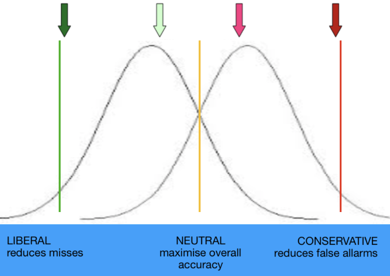

10 Signal Detection Theory
Signal Detection Theory (SDT) is a framework used to describe how observers distinguish signal from noise under conditions of uncertainty. It applies broadly to perception, memory, and decision-making. SDT models performance as arising from two key factors: sensitivity and criterion. Sensitivity refers to an observer’s ability to discriminate the signal from background noise; greater sensitivity means the signal is more easily distinguished. Criterion reflects the observer’s decision threshold—that is, the amount of evidence they require to say that a signal is present. Individuals vary in their criterion: some adopt a liberal criterion, responding “signal present” even when the evidence is weak; others adopt a conservative criterion, requiring stronger evidence to respond “signal present”. SDT helps separate these two influences—sensitivity and response bias—when interpreting observed behavior.
Signal Detection Theory is important in cognitive science research because we get a lot of insights into perception when we consider what we cannot do well. When trying to detect a signal (for example, a low-contrast image), versus noise (no image present), there are four possible outcomes: there could be no image present, and the participant correctly notes that (correct rejection); there could be an image present, but the participant makes a “no image” response (miss); there could be no image present, but the participant makes an “image” response (false alarm); and there could be an image that is correctly detected (hit). D-prime (d’), or the discriminability index, is a measure of sensitivity that quantifies the distance between the means of two distributions (noise and signal), expressed in standard deviations. A higher d-prime value indicates better signal detection and less overlap between the noise and signal distributions. This makes sense: the farther apart the distributions are between the noise and the signal, the more discriminable the signal is from the noise.

(LLAM19, 2019)
Image Detection Example
Let’s take a closer look at signal detection through the example of detecting a real image vs. a phase-scrambled image. In Divergent Roles of Visual Structure and Conceptual Meaning in Scene Detection and Categorization, Aronson and colleagues conducted a detection experiment utilizing d’. Participants viewed either an intact scene or a phase-scrambled version of the image, followed by a series of phase-scrambled masks They were then asked to recall whether the image they originally say was intact or phase-scrambled (Aronson, Adkins, and Greene 2025).
The participant pressed one button if the scene was a real image, and another if the scene was phase-scrambled. There are four possible outcomes that the participant could come to:
Columns = reality
Rows = Participant’s claims
| Image (reality) | Phase-Scrambled Image (reality) | |
|---|---|---|
| Image (participant’s claim) | Hit (an image was presented and the participant correctly claims that there was an image) | False Alarm (there was no image presented but the participant falsely claims that there was an image). |
| Phase-Scrambled Image (participant’s claim) | Miss (an image was presented, but the participant falsely claims that there was no image) | Correct Rejection (there was no image and the participant correctly claims that there was no image). |
In our detection task, d’ is a measure of how far apart the peak of the bell curve for real images is from the peak of the bell curve for phase-scrambled images. Whether most of these mistakes are misses or false alarms depends on where the participants puts their criterion, or in other words, how conservative they are in their decision-making process.
We can calculate d’ by finding the difference between the z-scores of the hit rate and the false alarm rate. The z-score is a normalized score reflecting how far a datum is from the mean in a distribution, see Chapter (ref?)(found_stats).
Implementation of d’ in Excel, R, and Matlab
To calculate d’ in Excel use the following formula:
=NORMINV(hit_rate, 0, 1) - NORMINV(false_alarm_rate, 0, 1)This computes the difference between the z-transformed hit rate and the z-transformed false alarm rate.In R, the
dprime()function imported from the Psycho library calculates d’ after tallying hits, misses, false alarms, and correct rejections.In Python, you can compute d′ using the
norm.ppf()function from the scipy.stats module, which performs the inverse of the normal cumulative distribution function.In Matlab the
NORMINVfunction requires the statistics toolbox, which is an additional cost. Thus, Excel, Python, or R are preferred softwares in d’ calculations.